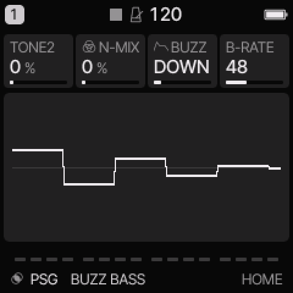
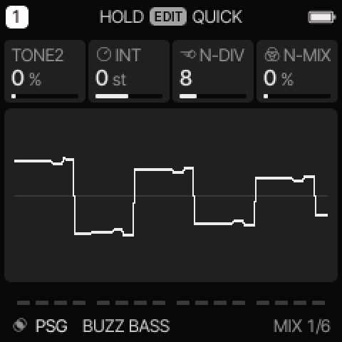
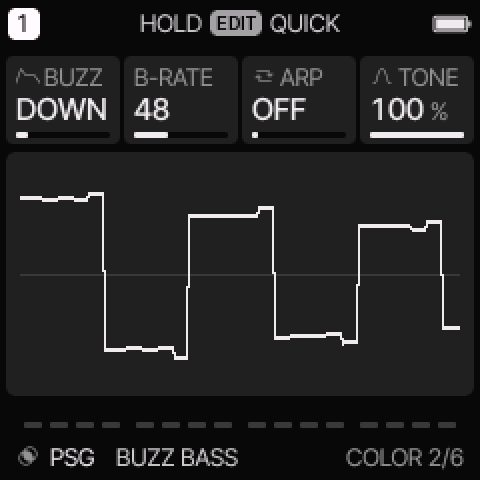
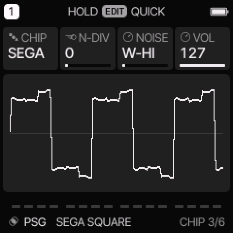

PSG engine
All engines · Modes and shared controls
Use PSG for square leads, two-tone intervals, buzzer basses, and Sega noise percussion.
How the sound is made
Two audible square tones mix with noise. CHIP selects an AY-inspired buzzer path or a Sega PSG core. The second tone can be tuned above or below the first.

PSG on HOME. These knobs apply to the selected track unless HOME LEVELS is enabled.
HOME knobs
| Knob 1 |
Knob 2 |
Knob 3 |
Knob 4 |
| TONE2 |
N-MIX |
BUZZ / NOISE |
B-RATE / TONE |
For HOME LEVELS, see HOME and mixer.
Engine controls
Press the panel EDIT button to cycle the engine pages.
Pause between presses to avoid opening its shortcut layer.
The musical EDIT key is a different control.
MIX page

MIX is engine page 1.
| Control |
What it changes |
| TONE2 |
Blend in the second square tone. |
| INT |
Tune the second tone from −24 to +24 semitones. |
| N-DIV |
Divide the noise clock. In Sega mode this affects linked noise only. |
| N-MIX |
Move from square tones toward noise. |
COLOR page

COLOR is engine page 2.
| Control |
What it changes |
| BUZZ / NOISE |
AY: choose a stepped buzzer shape. Sega: choose white or periodic noise and its clock. |
| B-RATE / VOL |
AY: set the buzzer clock rate. Sega: set volume on the chip step ladder. |
| ARP |
Select OFF, OCT, MAJ, or MIN for the built-in fast pitch pattern. |
| TONE |
Set output brightness. |
Select AY or Sega
- Select a PSG preset.
- Press EDIT until CHIP appears. Pause between presses.
- Turn KNOB 1 to choose AY or SEGA.

CHIP selects the synthesis path. It is also a separate card in the web editor.
| Mode |
HOME knobs 1–4 |
| AY |
TONE2, N-MIX, BUZZ, B-RATE |
| SEGA |
TONE2, N-MIX, NOISE, TONE |
AY BUZZ offers FLAT, DOWN, UP, TRI, RTRI, D-HLD, U-HLD, and PULSE.
FLAT bypasses the buzzer envelope, so B-RATE has no audible effect there.
DOWN, UP, TRI, RTRI, and PULSE repeat. D-HLD and U-HLD stop at their end level.
B-RATE can move from a slow volume pattern into an audible buzzer tone.
Sega NOISE offers W-HI, W-MID, W-LO, W-LNK, P-HI, P-MID, P-LO, and P-LNK.
W means white noise. P means periodic noise. LNK links the clock to the third tone divider.
That third tone is silent and supplies the noise clock.
N-DIV has no effect on the fixed HI, MID, and LO noise clocks.
VOL stays on the COLOR page and changes in sixteen effective steps, including mute.
Try these changes
Hear the AY buzzer
Load AY BUZZ LEAD. Compare FLAT and TRI. In TRI, turn B-RATE slowly. Leave N-MIX low to hear the tone clearly.
Make a Sega hat
Load SEGA HAT. Confirm CHIP is SEGA. Compare W-HI and P-HI, then try W-LNK and adjust N-DIV. Keep a short common envelope.
Factory presets
BUZZ BASS, PSG CHORD, SEGA HIT, AY BUZZ LEAD, AY ZAP, SEGA SQUARE, SEGA CHORD, SEGA HAT.
See the inspired preset catalogue for the references behind the newer sounds.
Limits and useful checks
The AY path is inspired synthesis. The Sega path uses a chip core with instrument mixing around it. Neither is a full console or game-music player.
Save a user preset or project before loading another sound if you want to keep your edits.